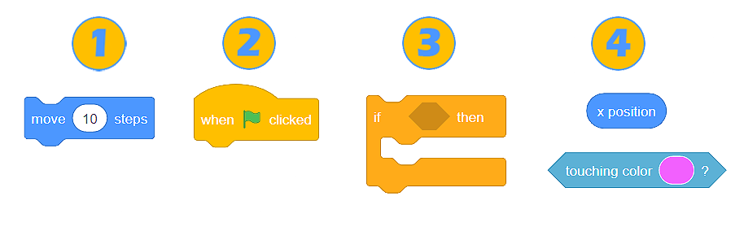
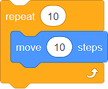
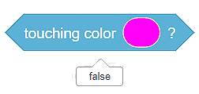
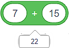

Blokovi¶
Računarski programi su skupovi naredbi kojima objašnjavamo računaru kako da uradi određeni zadatak ili reši nekakav problem. S obzirom na to da je većina programskih jezika tekstualna, programeri najčešće kucaju naredbe.
U vizuelnom programskom jeziku Skreč, naredbe ne pišemo, već koristimo blokove koji ih predstavljaju. Programe kreiramo nizanjem (slaganjem) blokova u odgovarajućem redosledu.
Vrste blokova u Skreču¶
U Skreču razlikujemo 4 vrste blokova:
Blokovi naredbi;
Blokovi koji povezuju događaje sa izvršavanjem programa;
Blokovi koji kontrolišu izvršavanje programa;
Blokovi koji saopštavaju neku vrednost (funkcijski blokovi).
Blokovi naredbi¶
Blokovi naredbi imaju udubljenja u gornjem delu i ispupčenja u donjem. Dizajnirani su tako da omogućavaju međusobno spajanje (povezivanje). Dovoljno je da, iz odgovarajuće kategorije blokova, prevučemo blok naredbi u prostor za programiranje i spojimo ga sa blokovima koji su u tom prostoru već nalaze. Spajanje blokova podseća na magnetno privlačenje - čim udubljenje bloka naredbi postavimo dovoljno blizu nekog drugog bloka, on će se “zalepiti” za njega nastavljajući započeti niz. Ispupčenje omogućava novim blokovima da se nadovežu.
Blokovi koji povezuju događaje sa izvršavanjem programa¶
Ova vrsta blokova ima “šešir”. To znači da se oni mogu naći samo na početku niza blokova. Slaganje skripte obično započinjemo upravo ovim blokovima. Na donjoj strani imaju ispupčenje koje obezbeđuje nadovezivanje novih blokova.
Važno je da znaš da ovi blokovi predstavljaju događaje koji predstavljaju okidač za izvršavanje naredbi koje se ispod njih nalaze. Na primer, blok  obezbeđuje da se blokovi naredbi nanizani na njega izvrše tek kada bude kliknuto na zelenu zastavicu, koja se nalazi iznad pozornice.
obezbeđuje da se blokovi naredbi nanizani na njega izvrše tek kada bude kliknuto na zelenu zastavicu, koja se nalazi iznad pozornice.
Blokovi koji kontrolišu izvršavanje programa¶
Slično blokovima naredbi, blokovi koji kontrolišu izvršavanje programa imaju udubljenje na gornjoj i ispupčenje na donjoj strani. Možemo da ih nadovežemo na druge blokove, kako i da nove blokove dodamo ispod njih.
Obe blokove karakteriše i sposobnost da u sebe prime druge blokove. Na primer, skripta  obezbeđuje da se naš lik kreće 10 puta po 10 koraka.
Blokovi koji saopštavaju neku vrednost (funkcijski blokovi)¶
Osim po obliku, od ostalih blokova razlikuju se i po tome što ne mogu samostalno da budu deo skripte. Drugim rečima, oni se ne nadovezuju na druge blokove, već čine njihov sastavni deo.
Funkcijski blokovi sadrže neku vrednost. Izgled im zavisi od tipa podatka koji sadrže:
zaobljeni blokovi sadrže broj
 ili string
ili string  ;
;uglasti blokovi sadrže vrednost Tačno (true) ili Netačno (false)
 .
.
Blokovi naredbi i blokovi koji kontrolišu izvršavanje programa sadrže prostore u koje je moguće postaviti funkcijske blokove. Ti prostori mogu biti ovalnog ili šestougaonog oblika.
 U blokove sa ovalnim prostorom
U blokove sa ovalnim prostorom  moguće je umetnuti i zaobljene i uglaste funkcijske blokove
moguće je umetnuti i zaobljene i uglaste funkcijske blokove  , dok je u blokove sa šestougaonim prostorom moguće umetnuti samo uglaste funkcijske blokove .
, dok je u blokove sa šestougaonim prostorom moguće umetnuti samo uglaste funkcijske blokove .
Uz ove blokove, u okviru kategorija u kojima se nalaze, postoji polje koje je moguće označiti (štiklirati). Označavanjem ovog polja, vrednosti koje čuvaju funkcijski blokovi postaju vidljive na pozornici.
Vrednost koju sadrže funkcijski blokovi možemo da vidimo i klikom na njih. Na primer, blok  čuva vrednost false zato što naš lik ne dodiruje prikazanu boju, dok blok  čuva vrednost 22, zato što je to zbir navedenih brojeva).
- Q-1: Analiziraj skriptu na slici. Označi rezultat izvršavanja programa.

- Kada kliknemo na zelenu zastavicu, lik će izgovoriti "true".
- Potpuno si u pravu!
- Kada kliknemo na zelenu zastavicu, lik će izgovoriti "false".
- Uglasti funkcijski blok vraća vrednost Tačno (true) ili Netačno (false). Kako je tvrđenje 60>50 tačno, lik će izgovoriti "true".